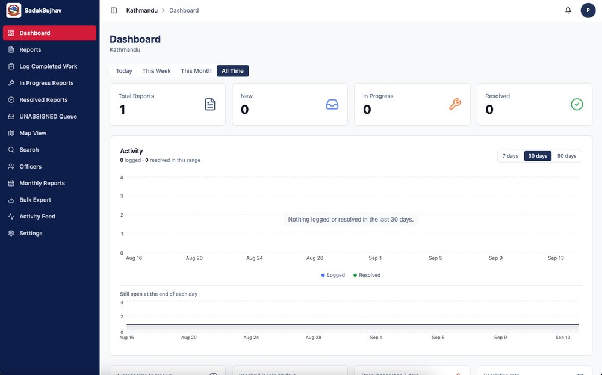

One connected experience. Citizens to road offices.
Featured product · Civic technology
Better roads begin
Better roads begin
with being heard.
Sadak Sujhav / सडक सुझाव
A pothole. A broken footpath. A flooded stretch of road. Photograph it, put it on the map, and follow your report as the responsible road office responds.
Photo + locationA clearer way to report
Android & iOSAvailable on both app stores
Features verified with the Google Play listing. Coverage depends on the participating road authority.